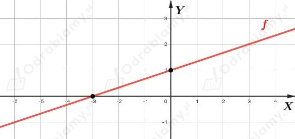
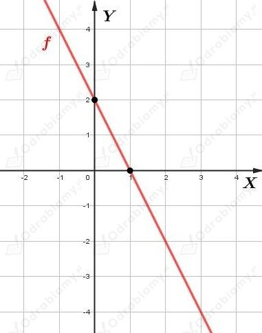
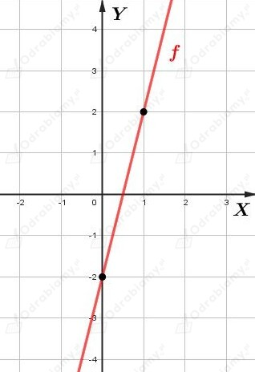
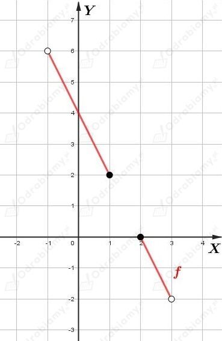

a)
Dana jest funkcja f określona wzorem:
Wyznaczmy współrzędne punktu przecięcia wykresu funkcji f z osią OX rozwiązując równanie f(x)=0. Mamy:
Zatem szukane współrzędne to:
Wyznaczmy współrzędne punktu przecięcia wykresu funkcji f z osią OY wyznaczając wartość liczby f(0). Mamy:
Zatem szukane współrzędne to:
Korzystając z wyznaczonych punktów, narysujmy wykres funkcji f. Mamy:

Funkcja f jest funkcją rosnącą.
b)
Dana jest funkcja f określona wzorem:
Wyznaczmy współrzędne punktu przecięcia wykresu funkcji f z osią OX rozwiązując równanie f(x)=0. Mamy:
Zatem szukane współrzędne to:
Wyznaczmy współrzędne punktu przecięcia wykresu funkcji f z osią OY wyznaczając wartość liczby f(0). Mamy:
Zatem szukane współrzędne to:
Korzystając z wyznaczonych punktów, narysujmy wykres funkcji f. Mamy:

Funkcja f jest funkcją malejącą.
c)
Dana jest funkcja f określona wzorem:
Wyznaczmy współrzędne punktu przecięcia wykresu funkcji f z osią OX rozwiązując równanie f(x)=0. Mamy:
Zatem szukane współrzędne to:
Wyznaczmy współrzędne punktu przecięcia wykresu funkcji f z osią OY wyznaczając wartość liczby f(0). Mamy:
Zatem szukane współrzędne to:
Zauważmy, że punkt (1, 2) należy do wykresu tej funkcji.
Korzystając z wyznaczonych punktów, narysujmy wykres funkcji f. Mamy:

Funkcja f jest funkcją rosnącą.
Dana jest funkcja f określona wzorem
Zauważmy, że punkty (-1, 6), (1, 2), (2, 0), (3,-2) leżą na prostej określonej równaniem y=-2x+4.
Narysujmy wykres tej funkcji:

Odczytujemy zbiór wartości funkcji f. Mamy:
Liczba 2 jest miejscem zerowym tej funkcji.
Równanie f(x)=1 nie ma żadnych rozwiązań.
a)
Dana jest prosta
Wyznaczmy równanie funkcji liniowej f określonej wzorem f(x)=ax+b, której wykres jest równoległy do prostej k i przechodzi przez punkt P=(-4, 2).
Skoro wykres funkcji liniowej i prosta k są równoległe, to a=3. Zatem
Wiedząc, że punkt P należy do wykresu funkcji f mamy:
Więc
b)
Dana jest prosta
Zapiszmy równanie prostej k w postaci kierunkowej. Mamy:
Wyznaczmy równanie funkcji liniowej f określonej wzorem f(x)=ax+b, której wykres jest równoległy do prostej k i przechodzi przez punkt P=(√2, -2).
Skoro wykres funkcji liniowej i prosta k są równoległe, to a=√2. Zatem
Wiedząc, że punkt P należy do wykresu funkcji f mamy:
Więc